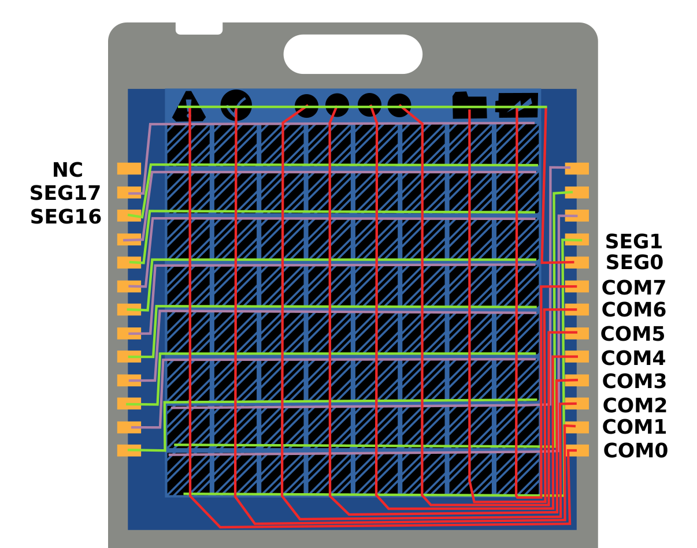
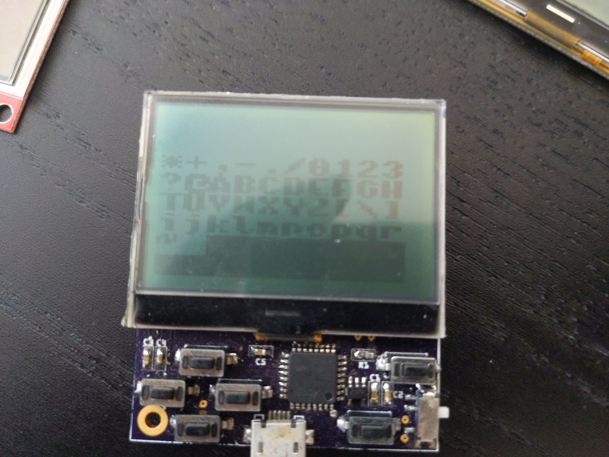
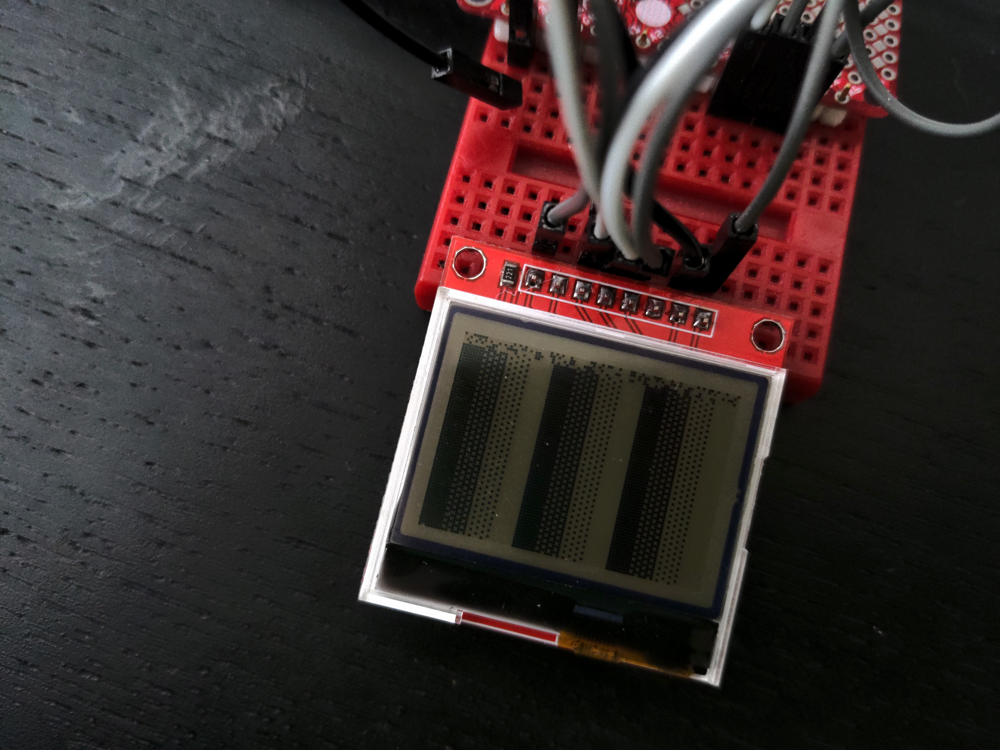

The Display¶
Published on 2022-05-10 in PewPew LCD.
Inspired by the Sensor Watch project, I initially thought about using a custom LCD screen, with just the right size and just the right number of “pixels”. Since Joe Castillo was using a SAML22 chip in his design, which is a close cousin of the SAMD21 I use, and he’s also interested in porting CircuitPython to it, it seemed like a good idea. But when I researched it a bit closer, it turned out to not be so great. Preparing a mock design of the display, like this:
I quickly realized that the QFN32 version of the chip will simply not have enough pins to drive it, and that a bigger and more expensive version would have to be used. Furthermore, I would still have no good way of displaying the error messages. And of course ordering such a display would only contribute the all the electronic trash lying around. So I decided to go with an existing display after all, but maybe take a look at the older LCD screens available.
I remembered another of my experiments, when I was designing a conference badge:
I rejected that design back then, because I wanted animations, and the display was too slow to even display a bouncing ball. Plus, it was more expensive than the color TFT displays available. But for PewPew speed of the display doesn’t matter as much – the games are not that fast. So if I could find a similar display, only cheaper…
So I raided my drawers, and found this HX1230 breakout board:
Several hours of searching and detective work led me to discover that the display used here is RH-112, and that it was used in many old Nokia phones, including Nokia 1202. A quick look at Aliexpress reveals that there are lots of spare parts for those phones available, including the displays, that can be bought for $1.30 a piece. Seems like this is the perfect display fo this project, and since the displays are already produced and lie there in the storehouses, I’m actually decreasing the amount of electronic trash by using them for something more useful.\